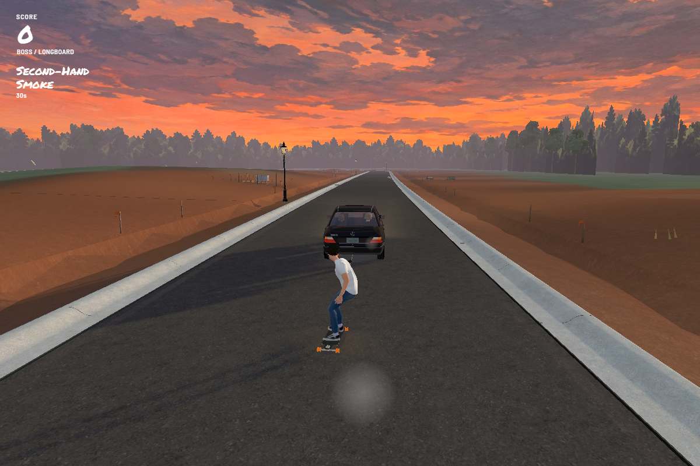
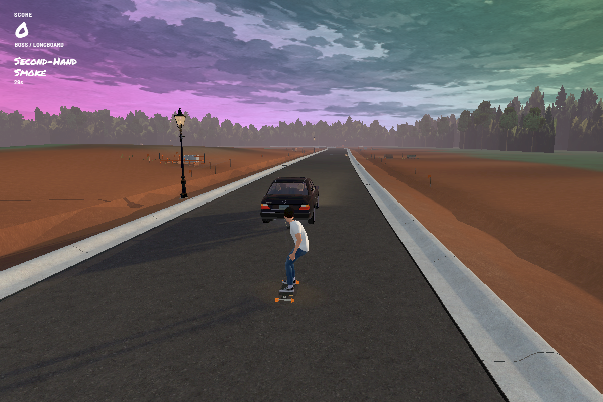
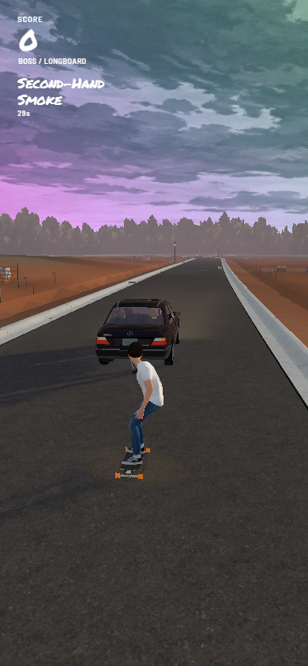

Build 166 · Boss's rainbow sky
Play Build 166 →
Only Boss can collect three of Sprad's smoke puffs to trigger Second-Hand Smoke. Boss keeps riding on the rope with normal gravity. Only the sky changes: rainbow colors for 30 seconds, followed by a six-second fade.
Boss cannot collect Secret Spliff. Sally, Black and Dog still can.
The same illustrated clouds

Boss stays on the rope

Portrait
